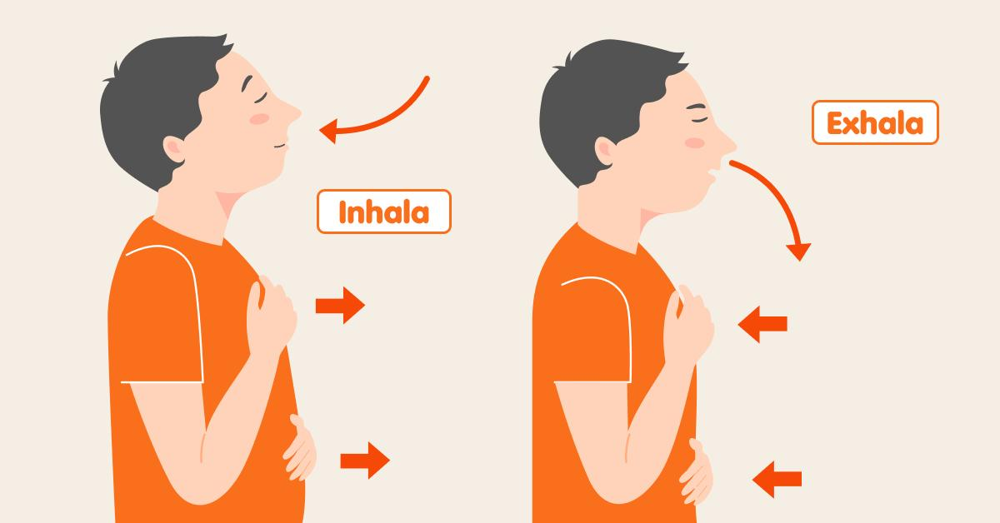

La Ansiedad en el Entorno Escolar
La ansiedad es un sistema de alerta natural de nuestro cuerpo y cerebro. Se activa cuando percibimos una situacion como amenazante, impredecible o que exige mucho de nosotros, como la temporada de examenes finales, hablar en publico o la presion social de encajar con nuestros compañeros.
En pequeñas dosis, la ansiedad es funcional: nos da el impulso necesario para estudiar o prepararnos. Sin embargo, cuando los niveles de estres superan nuestra capacidad de manejo, se convierte en un estado de alarma constante que drena nuestra energia.
El Ciclo de la Ansiedad Academica y sus Sintomas
Muchos estudiantes caen en un ciclo destructivo: Estres -> Procrastinacion (evitar la tarea) -> Culpa -> Mayor Ansiedad. Identificar como reacciona tu cuerpo es el primer paso:
- Sintomas fisicos: Taquicardia, sudoracion excesiva, tension muscular prolongada (especialmente en cuello y hombros), malestares estomacales cronicos y alteraciones del sueño (insomnio).
- Sintomas mentales: Dificultad severa para concentrarse, bloqueos cognitivos ("quedarse en blanco" durante una evaluaci n), pensamientos acelerados y anticipacion de escenarios catastroficos ("voy a reprobar todo").
El Riesgo de la Desafiliacion Escolar
Existe un vinculo directo entre la ansiedad no tratada y el abandono escolar. Un estudiante que sufre ataques de panico o ansiedad generalizada comienza a percibir la escuela como un lugar hostil. Esto genera evitacion escolar (faltar a clases), lo que inevitablemente baja el rendimiento y aumenta la frustracion, culminando muchas veces en la temida desafiliacion escolar. Atender la salud mental es literalmente salvar la trayectoria educativa.
Recomendaciones para Controlarla
- Tecnica de anclaje (5-4-3-2-1): Cuando sientas que la ansiedad te abruma, concentrate en tu entorno: nombra 5 cosas que puedas ver, 4 que puedas tocar, 3 que puedas escuchar, 2 que puedas oler y 1 que puedas saborear. Esto desconecta al cerebro del panico y lo devuelve al momento presente.
- Metodo para estudiar: Evita estudiar por horas seguidas. Trabaja 25 minutos y descansa 5. Esto evita la sobrecarga cognitiva y reduce la sensacion de ahogo ante tareas gigantescas.
- Higiene digital: Evita comparar tu progreso academico o tu vida con lo que otros publican en redes sociales; estas plataformas suelen ser un gran disparador de ansiedad social.
- Construye una red de apoyo: Acercate al departamento de tutorias, orientacion educativa o psicologia de tu escuela. Hablar del problema reduce su poder sobre ti.
Material de Reflexion
tomate unos minutos, cierra los ojos y escucha este ejercicio para estabilizar tu respiracion:
